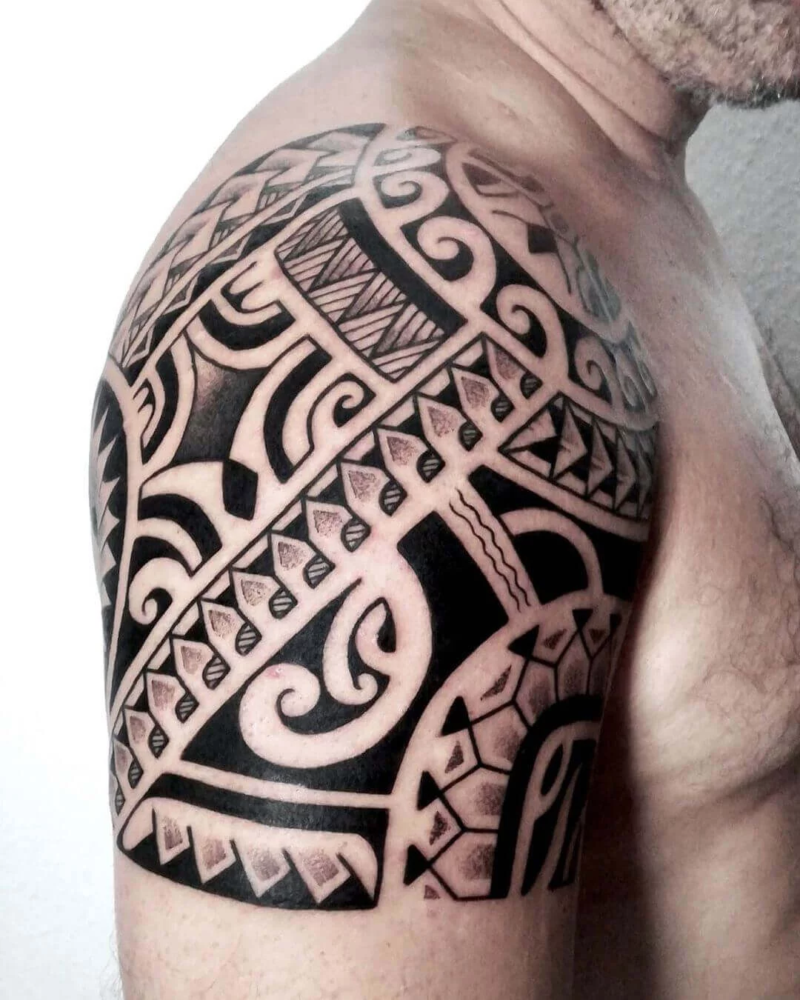
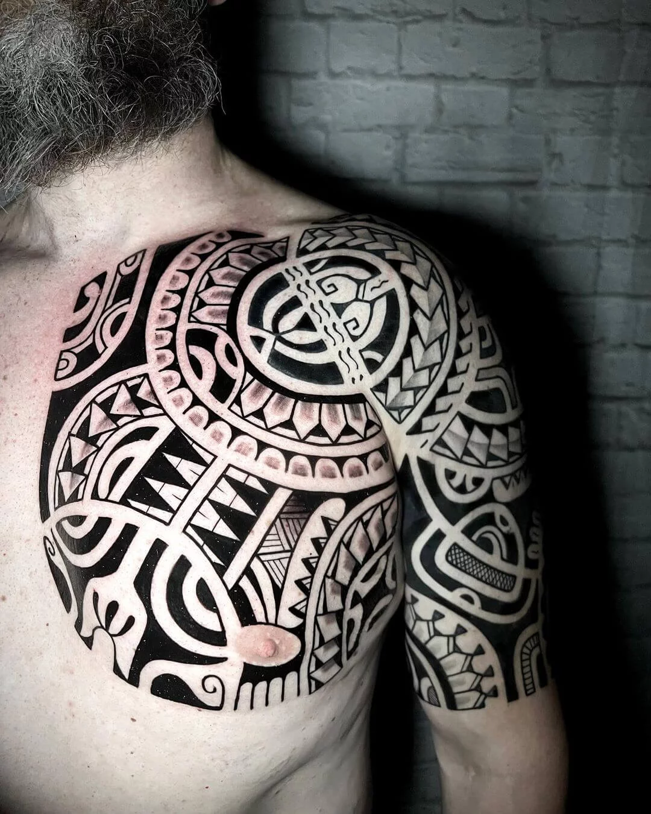
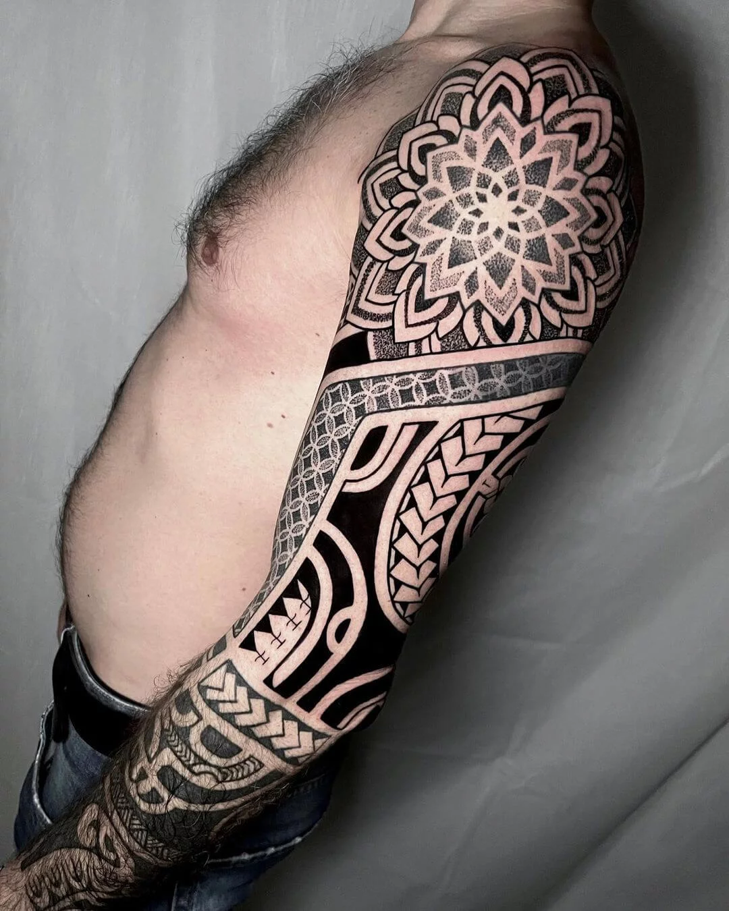
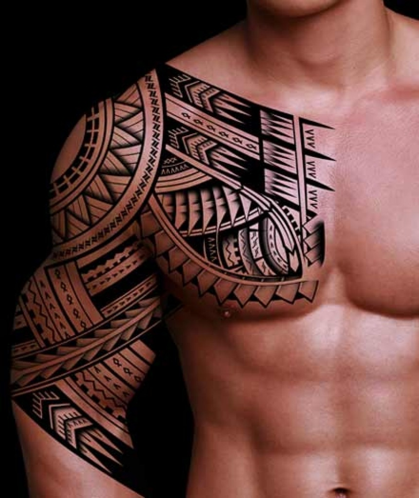
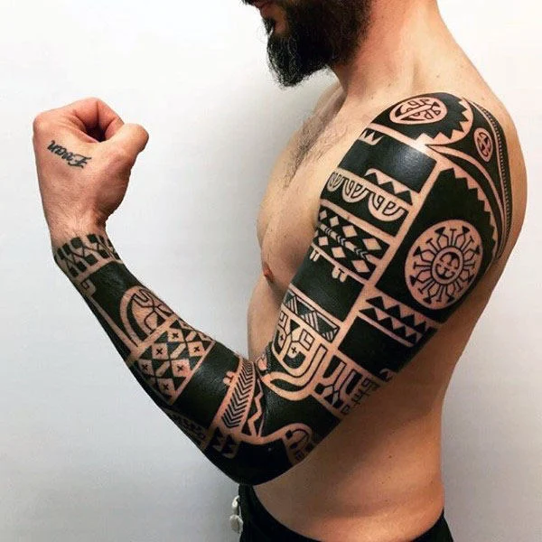
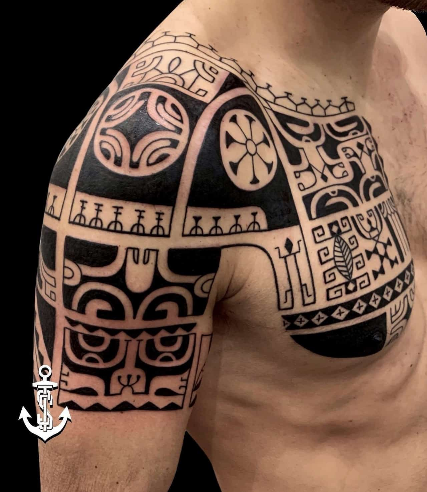
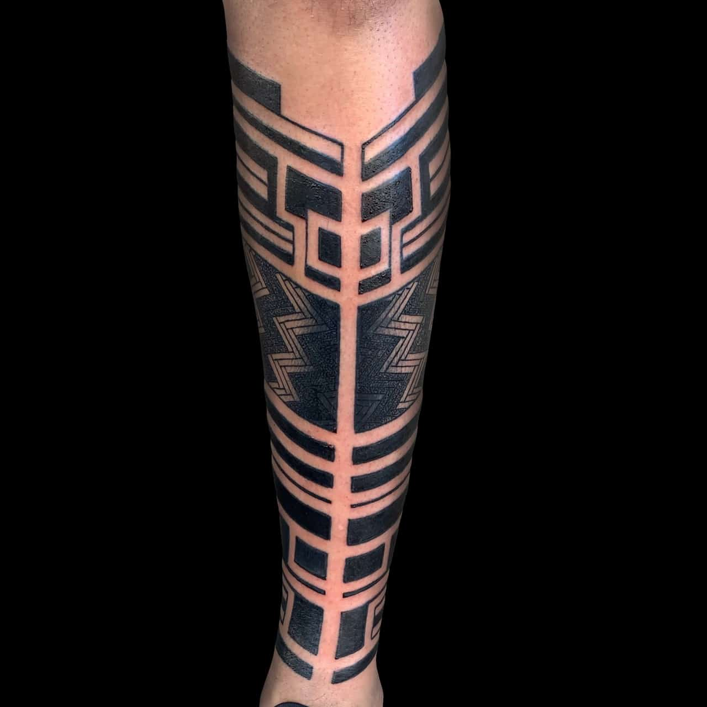
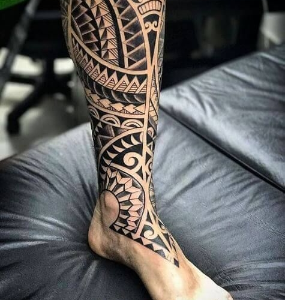

Tribale
Stile
lI tatuaggio tribale è uno stile di tattoo caratterizzato da motivi e disegni astratti solitamente realizzati utilizzando esclusivamente il colore nero, che mettono in risalto una parte del corpo in modo armonioso ed esteticamente impattante.
I soggetti dei tattoo tribali presentano generalmente linee audaci e marcate, motivi geometrici ripetuti e incrociati tra loro, simboli e forme stilizzate provenienti dalle tradizioni, dalle culture e dalle popolazioni del passato, anche se negli ultimi anni hanno subito varie evoluzioni stilistiche e interpretazioni personali da parte degli artisti del tatuaggio moderno.
Photogallery







